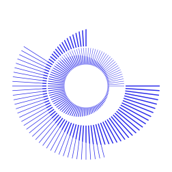

QualcommKodiak
Build · Flash · Boot
How the firmware stack is assembled from source,
programmed onto the board, and brought to life.
A build system for Qualcomm TZ open firmware development.
Agenda
Platform Overview
SoC · board · software stack
Build System Architecture
Top-level Makefile · component layout
Make Targets
Build targets and their outputs
Proprietary Platform Blobs
Skip Yocto — fetch blobs directly
Yocto Integration
Optional BSP for firmware blobs
Flashing
QDL / Firehose · flash-loader vs flash-efi
Boot Chain
PBL → XBL → TF-A → OP-TEE → U-Boot → Linux
Boot Loader Map
load addresses & partitions
Arm Exception Levels
EL3 / S-EL1 / EL2 at runtime
TF-A
BL31 runtime · FIP image
QTISECLIB
libqtisec.a · linked into BL31
OP-TEE OS
BL32 — Secure World Kernel
optee-client
libteec.so · tee-supplicant daemon
U-Boot
BL33 — UEFI bootloader
Linux Kernel
EL2 device tree · built-in drivers
Linux at EL2 — KVM
open hypervisor (KVM, not Gunyah)
xtest
OP-TEE test suite on the board
UKI Assembly
Unified Kernel Image → efi.bin
Platform Device Trees
U-Boot vs kernel DTB
Buildroot
Root filesystem → initramfs
Tests
on-board validation
Summary
Key facts and commands
Platform Overview
SoC
- Qualcomm QCM6490
- Kryo 670 (AArch64-only)
- Adreno 643 GPU
- Hexagon DSP (ADSP/CDSP)
- WCSS (Wi-Fi/BT)
Board
- Qualcomm RB3 Gen2
- Development / EVK board
- UFS storage
- Serial: ttyMSM0
- USB EDL / QDL flash
Software Stack
- TF-A (BL2 + FIP)
- OP-TEE OS (BL32)
- U-Boot (BL33 / UEFI)
- Linux/KVM (EL2) + Buildroot initramfs
- Packaged as Unified Kernel Image
What's in the FIP
The Firmware Image Package is TF-A's single container for the boot-chain
images loaded after BL2. TF-A packs three payloads, then wraps fip.bin as an ELF
(uefi.elf) loaded at 0x9fc00000:
- BL31 — TF-A EL3 runtime / secure monitor (opteed SPD)
- BL32 — OP-TEE OS
tee-raw.bin(Secure EL1) - BL33 — U-Boot
u-boot.bin(Non-secure bootloader → UKI)
Everything above EL3 is open-source and built from source.
The low-level XBL firmware and signing keys remain Qualcomm proprietary.
Build System Architecture
Entry Point
kodiak.mk— top-level GNU Make- Calls into
common.mkfor shared targets - Toolchain:
aarch64-none-linux-gnu- - All components are AArch64-only (64-bit NS user, kernel, S user, S kernel)
Key Directories
kodiak/input/— pre-built blobs & flash supportkodiak/output/— generated artifactskodiak/security/— signing profile + seclibkodiak/patches/— kernel DTS patchkodiak/ukify/— EFI stub for UKI
make tfa
—Bootloader pipeline→
make flash-loader
pack FIP → uefi.elf
make efi
—Kernel + Root pipeline→
make flash-efi
Make Targets
| Target | What it does |
|---|---|
| Open Firmware — built from source | |
tfa |
BL31 — EL3 runtime firmware (TF-A) |
optee-os |
BL32 — OP-TEE secure OS |
u-boot |
BL33 — UEFI bootloader |
linux |
Kernel + DTB — drivers built-in, no modules |
buildroot |
Initramfs root filesystem |
efi |
efi.bin — UKI bundling kernel + initramfs + DTB + cmdline |
fetch-blobs |
Download Qualcomm firmware blobs — no Yocto build needed |
flash-loader |
Flash tz.mbn + uefi.elf + blobs — first flash / boot-chain change |
flash-efi |
Flash efi.bin (UKI) only — fast kernel iteration |
| Reference Firmware — Qualcomm Yocto BSP | |
yocto |
Build the complete reference Yocto BSP release |
flash-yocto |
Install the reference release on the board — verify against the stock BSP |
Proprietary Platform Blobs Skipping Yocto — direct download
Both upstream URLs are publicly accessible — no Qualcomm account required.
make fetch-blobs automates all three steps below and populates
kodiak/blobs/, which the flash targets use as a fallback.
① Boot Binaries — 15 MB
SoC boot chain only — no DSP firmware.
- XBL, XBL config, AOP
- CPUCP, DEVCFG, HYP, SHRM
- QUP FW, imagefv, prog_firehose.elf
② CDT File — 380 KB
Customer Device Tree.
- Board-specific hardware config blob
- Consumed by XBL early in boot
③ GPT Tables & rawprogram XMLs
Partition layout for QDL.
- GPT bins + rawprogram / patch XMLs
- Committed under
platforms/qcs6490-rb3gen2/ make fetch-blobsdoes a shallow clone & copies them
④ DSP Firmware & Runtime
Loaded at runtime, baked into the rootfs.
- Remoteproc images qcom/qcm6490/*.mbn·jsn
- AudioReach tplg qcom/qcs6490/
- Venus codec qcom/vpu-2.0/venus.mbn
- FastRPC runtime fastrpc_shell + skels
- Staged into
kodiak/overlay/→ rootfs / UKI
Yocto Integration Optional BSP for firmware blobs
Why Yocto?
The flash procedure needs Qualcomm-built firmware binaries (XBL, AOP, CDSP firmware, WPSS, firehose programmer, GPT tables). These blobs are publicly available — no build required.
Faster: make fetch-blobs downloads them directly in minutes.
make yocto is the multi-hour alternative when a full BSP image is needed.
make yocto — full BSP (hours)
- Clones
meta-qcomfrom GitHub - Builds via
kasusingrb3gen2-core-kit.yml - Produces
core-image-base-rb3gen2-core-kit.rootfs.qcomflash/ - Flash targets auto-copy from this deploy dir
Use make fetch-blobs instead to skip the build entirely.
| From Yocto | From this repo |
|---|---|
| XBL + XBL config | TF-A BL2 (tz.mbn) |
| AOP firmware | FIP / uefi.elf |
| ADSP / CDSP FW | Linux kernel |
| WPSS firmware | Buildroot initramfs |
| Prog firehose ELF | UKI (uki.efi) |
| GPT tables | efi.bin (FAT32) |
| rawprogram XMLs |
Flashing QDL — Qualcomm Download Protocol
The board is held in EDL (Emergency Download Mode) over USB. The host sends a firehose programmer ELF, then uses XML manifests to write partition images directly via the Sahara/Firehose protocol.
Prerequisite: the qdl flasher must be on PATH — build it from
linux-msm/qdl.
make flash-loader
- Programs the bootloader chain only
- firmware blobs, XBL, GPT
- TF-A (
tz.mbn) + FIP (uefi.elf) - Use after a full rebuild / first provisioning
- Follow with
make flash-efifor the kernel
make flash-efi
- Programs only the EFI partition (
efi.bin) - Filters
rawprogram0-only-kernel.xmlfromrawprogram0.xml - Fast kernel / initramfs iteration
- Firmware untouched
Flash Artifacts — Lookup Order
Each required file is resolved in priority order — the first hit wins:
(make fetch-blobs)
Steps 2 and 3 are alternatives — Yocto deploy wins over kodiak/blobs/, so a make yocto
build makes make fetch-blobs unused.
Flash Procedure — Step by Step
-
1Enter EDL mode Hold Volume-Down while connecting USB, or issue the
adb reboot edlcommand. The host sees a QDL USB device. -
2Load the firehose programmer QDL uploads
prog_firehose_ddr.elfinto SRAM via the Sahara protocol. The programmer initialises DDR and the UFS controller. -
3Write GPT partition tables
gpt_main*.bin / gpt_backup*.binare written first to lay out the partition map on UFS LUNs. -
4Flash partition images via rawprogram XML The XML manifests map each image file to a partition.
flash-loaderuses all rawprogram XMLs;flash-efiuses only the filtered EFI-partition XML. -
5Apply patches (patch*.xml) GPT corrections and CRC patches are applied. Board resets and boots from the freshly written images.
Boot Chain
0x9FC0_0000.
io_memmap) to read the FIP already resident in DRAM — no storage access — extracting BL31, BL32 (OP-TEE) and BL33 (U-Boot) by UUID, then hands off to BL31.
Boot Loader Map load addresses & partitions
| Stage | Load addr | Size |
|---|---|---|
| BL2 — TF-A (tz.mbn) | 0x1C00_E000 | 1 MB |
| BL31 — EL3 monitor | 0x1C20_0000 | 1 MB |
| BL32 — OP-TEE | 0x1C30_0000 | 2 MB |
| BL33 — U-Boot | 0x9F80_0000 | 4 MB |
| FIP — uefi.elf | 0x9FC0_0000 | ≤ 4 MB |
BL2/BL31/BL32 live in on-chip IMEM (0x1C00_0000);
BL33 & FIP in DDR (0x9F80_0000+). Console UART @ 0x994000 (ttyMSM0).
The only three images built from source (everything else is a prebuilt Qualcomm blob):
- tz_a / tz_b ←
tz.mbn— signed ELF/MBN (BL2) - uefi_a / uefi_b ←
uefi.elf— ELF-wrapped FIP (BL31+BL32+BL33) - efi ←
efi.bin— FAT32 image (UKI: kernel + DTB + initramfs)
- _a / _b — two slot copies of tz & uefi; same image in both
efiis single (no A/B)flash-loader→ tz + uefi (+ blobs)flash-efi→ efi only
Arm Exception Levels at Runtime
EL3 — Secure Monitor (TF-A)
Highest privilege. Handles SMCs between Normal and Secure worlds. After boot, TF-A remains resident as the Secure Monitor but only executes during world-switch.
Secure EL1 — OP-TEE OS
Runs in TrustZone Secure World. Hosts Trusted Applications. Communicates with Linux via the TEE subsystem SMC interface.
Non-secure EL2 — U-Boot & Linux
TF-A drops BL33 (U-Boot) into the Normal World at EL2; U-Boot then enters Linux at the same level — the kernel confirms it on the console: “All CPU(s) started at EL2.” The EL2 DTB overlay remaps IOMMU streams that behave differently without Gunyah.
Normal EL0 — User Space
Buildroot initramfs processes (Busybox, OpenSSH, tee-supplicant). OP-TEE client calls travel EL0 → EL2 (kernel) → EL3 (TF-A) → Secure EL1 (OP-TEE).
TF-A BL31 runtime · BL2 · FIP image
Build flags
- PLAT: rb3gen2
- SPD: opteed (OP-TEE dispatcher)
- E=0: error extensions off
- Needs: libqtisec.a (QTISECLIB)
Outputs
bl31.bin— TF-A EL3 runtime firmware (secure monitor, opteed SPD)- fip.bin = BL31 + BL32 (OP-TEE) + BL33 (U-Boot) →
uefi.elf@ 0x9fc00000 bl2.elf— built by TF-A;tz.mbnis the pre-signed kodiak/input/tz.mbn (OEM signing disabled;SIGN_BL2=1) → kodiak/output/
External blobs / tools
- libqtisec.a — Qualcomm TZ security library (from coreboot/qc_blobs), MD5-verified
- sectools — Qualcomm's open-source signing tool, fetched on demand to sign BL2 (only when
SIGN_BL2=1) - kodiak/input/tz.mbn — pre-signed BL2, used by default (OEM signing disabled)
BL2 — tz.mbn (OEM signing disabled for now)
OEM BL2 signing is currently disabled. The device
xbl_sec cannot yet verify OEM-only signed binaries, so an
OEM-signed tz.mbn fails to boot. By default tfa
uses the pre-signed kodiak/input/tz.mbn (errors if absent).
We are working to release the XBL verification image (updated
xbl_sec) as soon as possible.
Once it ships, OEM signing re-enables with SIGN_BL2=1:
tfa then builds BL2 from TF-A and signs it with the
open-source Qualcomm Sec Tools:
make SIGN_BL2=1 tfa sectools secure-image bl2.elf \ --outfile kodiak/output/tz.mbn \ --image-id TZ-TEE \ --security-profile kodiak/security/kodiak_tzt_security_profile.xml \ --sign --signing-mode TEST
With signing enabled, if signing fails (e.g. sectools unavailable) it
prints a WARNING and falls back
to the pre-signed kodiak/input/tz.mbn, erroring only if that
is also absent.
QTISECLIB libqtisec.a — linked into BL31
QTISECLIB (Qualcomm Technologies Inc. Security Library)
is a prebuilt, closed-source static library
(libqtisec.a) that Qualcomm's upstream TF-A platform port
(plat/qti) links into BL31 — the EL3 secure monitor.
The open plat/qti C code is a thin shim that calls into qtiseclib through a
fixed interface. The SoC-specific power-management, CPU and security sequences Qualcomm
does not open-source live inside the blob.
- Not checked in —
verify-qtiseclibfetches it on demand (a prereq ofmake tfa) - SoC variant sc7280 — covers QCM6490 / RB3 Gen2 (Kryo 670)
- MD5-pinned & verified before it is used
- Passed to TF-A as
QTISECLIB_PATH=, statically linked into BL31 → FIP
QTISECLIB Role in BL31 · interface
TF-A calls a small, fixed set of entry points; qtiseclib implements them:
qtiseclib_bl31_platform_setup()— SoC EL3 bring-up at BL31 entry- PSCI backend — CPU on/off/suspend, system off/reset, power-state validation
- CPU reset / warm-boot entry — secondary-core and resume paths
- Secure-interrupt dispatch — EL3 ISR for QTI secure IRQs
- Secure-memory assignment — access-control / carveout programming
- TF-A supplies the generic runtime — SMC dispatch, GIC framework, PSCI top-half, opteed SPD
- qtiseclib supplies the SoC bottom-half — the actual hardware sequences
- qtiseclib calls back into TF-A for console/log, mmap and locks (shared EL3 runtime)
- The monitor then dispatches to OP-TEE (BL32, opteed) and U-Boot (BL33)
QTISECLIB Drivers & Features
Power Management · PSCI
- CPU on/off, core & cluster power collapse
- CPU & system suspend (deep sleep) / resume
- System reset and power-off
- Coordinated with AOSS / RPMh and PMIC rails
CPU & Cluster
- Kryo 670 reset & warm-boot sequences
- DSU cluster coherency enter / exit
- Core errata workarounds applied at EL3
Interrupts & SMC
- GICv3 secure-interrupt setup + EL3 ISR dispatch
- QTI SiP SMC service backend
Memory Protection & Debug
- TZ / XPU secure carveouts + mem-assign access control
- SDI / download-mode & RAM crash-dump handling
- Minimal EL3 bus / clock bring-up
QTISECLIB Being replaced by open-source drivers
The SoC logic bundled in libqtisec.a is being reimplemented as open TF-A drivers under
plat/qti (renamed to the qcom namespace), so BL31 can be built
without the blob. The series land in parallel upstream
(TrustedFirmware Gerrit) and in qualcomm-linux/trusted-firmware-a.
PSCI · Power
- Native PSCI backend
- Backend-provided idle states
- WFI-based CPU standby
- Power & CPU topology
Power Infra
- Resource Power Manager hardened (RPMh) — deinit after BL31 setup
- Power Domain Controller (PDC) — chipset hooks
- Inter-Processor Communication Controller (IPCC) — mailbox driver
Clocks
- Clock driver framework
- CPUCP clock-domain driver
- Per-platform clock back-ends
Interrupts · GIC
- QTI interrupt service
- GICv3 group / IGRPMODR fixes
- GICv3 redistributor routing API
Interconnect
- Interconnect Bus (ICB) — micro-arbiter + core init
- Network-on-Chip (NoC) — error logger
- Interconnect Bus (ICB) — config-query driver
Platform Plumbing
- SMEM driver
- chipinfo part-gating query
- Ring-buffer console
- QTI → QCOM namespace rename
Two blobs, two replacements QTISECLIB → TF-A · QTEE → OP-TEE
QTISECLIB (the EL3/BL31 monitor blob) and QTEE (Qualcomm's secure OS) are different proprietary components with different open-source successors. Notably, the PAS/PIL firmware-authentication that QTEE used to provide is being taken over by OP-TEE — it lands in BL32, not in TF-A.
- Select the PSCI backend by
QTISECLIB_PATH— build with the native backend when the blob is absent - Drop the platform banner requiring QTISECLIB — the dependency becomes optional
- Once the driver set is complete,
plat/qcomlinks nolibqtisec.a - SoC-monitor functions only: PSCI/power, clocks, GIC, interconnect, sec_core, timers, watchdog, access control
- PAS / PIL — authenticate & bring up remoteproc firmware, now an OP-TEE PTA (
qcom_pas, the path kodiak uses) - Qualcomm platform enablement (Wildcat / Nord / Bruin)
- qcom crypto driver · software-key ICE PTA
- Video / Camera PAS (IRIS codec, Camera ICP)
- RPMB over UFS
Status tracked in the internal firmware-review dashboard — OP-TEE & TF-A, upstream + qualcomm-linux forks.
OP-TEE OS BL32 — Secure World Kernel
OP-TEE is an open-source Trusted Execution Environment that runs in the Arm TrustZone Secure World (EL1-S). It hosts Trusted Applications (TAs) and handles Secure Monitor Calls (SMCs) from the Normal World.
Configuration
- Platform: qcom-kodiak
- Output: optee_os/out/arm/core/tee-raw.bin
- Passed to TF-A as: BL32
TF-A packs OP-TEE into the FIP image alongside U-Boot. At runtime, TF-A loads OP-TEE into Secure EL1 before handing off to U-Boot in Normal World EL2.
The Linux kernel communicates with OP-TEE via the
tee-supplicant daemon and the
CONFIG_OPTEE driver, both
enabled in the kernel defconfig.
optee-client Normal World Runtime
The TEE Client API library. User-space applications call it to open sessions with Trusted Applications and invoke commands across the Normal/Secure World boundary.
- TEEC_InitializeContext / TEEC_FinalizeContext
- TEEC_OpenSession — open a channel to a TA
- TEEC_InvokeCommand — call a TA entry point
- TEEC_CloseSession
Buildroot Package
- Package:
optee_client_ext - Init script:
/etc/init.d/S30optee(auto-start) - User
tee— runs supplicant, owns/dev/teepriv0 - Group
teeclnt— client apps; includes usertest
Runs in Normal World as a privileged daemon. Acts as the bridge between the OP-TEE Secure World and REE filesystem / hardware resources.
-
TA loading — reads
/lib/optee_armtz/*.taand passes TA binaries to the Secure World on demand - Secure storage — mediates RPMB and REE-filesystem secure storage RPCs from OP-TEE OS
- Socket / time RPCs — handles other Secure World RPC calls that need REE access (entropy, sockets, time)
Without tee-supplicant running, TA loading and secure storage fail silently — always verify it is active before running xtest.
U-Boot BL33 — UEFI Bootloader
Build
- Defconfig: qcm6490_defconfig
- Output: u-boot/u-boot.bin
- Cross-compiler: aarch64-none-linux-gnu-
- Packed into FIP by TF-A as BL33
Why U-Boot?
U-Boot is configured in UEFI mode so the system presents a standard UEFI firmware interface, and the EFI partition is read using standard UEFI boot discovery.
- Reads the EFI system partition (FAT32
efi.bin) - Falls back to
EFI/BOOT/bootaa64.efias the UEFI fallback path - Discovers and launches
EFI/Linux/uki.efi(the Unified Kernel Image) - Hands kernel execution over at EL2 once the UKI is loaded
In short: BOOTSTD bootflow scan walks the UFS GPT partitions,
finds the FAT ESP holding \EFI\BOOT\bootaa64.efi, and launches it → the UKI at EFI/Linux/uki.efi.
Linux Kernel + Kernel Patches
Build Config
- Defconfig: defconfig (overridable)
- Auto-enabled: CONFIG_TEE, CONFIG_OPTEE
- Auto-enabled: CONFIG_EFI_BOOT, CONFIG_EFI_ZBOOT
- Auto-enabled: CONFIG_DEVTMPFS, CONFIG_QCOM_WDT
- PAS/DSP built-in: QCOM_PAS_TEE, QCOM_Q6V5_PAS, QCOM_FASTRPC, RPMSG/GLINK
- Video: VIDEO_QCOM_VENUS=y, VIDEO_QCOM_IRIS=n
- CONFIG_MODULES=n — every driver built-in (RAM initramfs, no module autoload)
- Output: arch/arm64/boot/Image
Console
console=ttyMSM0,115200 qcom_scm.download_mode=1 earlycon
0001-...-el2-set-DSP-firmware-name.patch — EL2 device tree
overlay: builds qcs6490-rb3gen2-el2.dtb, the variant needed when
running at EL2 without the Gunyah hypervisor.
- Enables the Qualcomm watchdog
- Disables the GPU Zap shader (not needed at EL2)
- Remaps IOMMU streams for ADSP, CDSP, WPSS remoteprocs
- Overrides ADSP/CDSP
firmware-nametoqcom/qcm6490/so the PAS driver finds the images - Enables the Venus video codec (status + SMMU streams + video-firmware node)
0002-venus-support-pas-framework-over-op-tee.patch — loads and
authenticates the Venus firmware through the PAS path over OP-TEE instead of QTEE/SCM.
- Selects OP-TEE via the
/firmware/opteeDT node (use_tz) - Firmware brought up with
qcom_mdt_load+qcom_pas_auth_and_reset - Remote-state via
qcom_pas_set_remote_state()(SCM fallback dropped)
Linux at EL2 — KVM, not Gunyah simplifies the Gunyah replacement · eases OP-TEE integration
- EL2 is the hypervisor level; Kodiak gives it to Linux itself (Arm VHE)
- The hypervisor is KVM — open source, replacing the proprietary Gunyah
- Simplifies the Gunyah replacement — no proprietary EL2 component in the stack
- Eases OP-TEE integration — OP-TEE passes resource tables to Linux (at EL2) for the PIL mappings the hypervisor used to do
- Gunyah (Type-1 hyp) owns EL2
- Linux (HLOS) runs as a guest VM at EL1
- Isolates VMs — stage-2 MMU, GIC virtualization
- Resource Manager creates VMs, brokers memory/IRQ
- PIL: hyp reassigns memory (HLOS→HYP→subsystem), delegates auth to QTEE
- Linux owns EL2 directly (Arm VHE)
- The hypervisor is KVM — open source, replacing Gunyah
- XBL config gives EL2 to the non-secure world (kvm variant, not gunyah)
- Guests still possible — hosted by KVM
- Firmware auth via OP-TEE PAS (
qcom_pas), not hyp→QTEE - During PIL, OP-TEE passes resource tables to Linux to set up the memory mappings Gunyah used to — possible now that Linux owns EL2
- Needs the
-el2DTB (patch 0001): watchdog, GPU-zap off, DSP/WPSS SMMU remap
- Stage-2 is not gone — KVM still uses it to confine its guests; the EL2 host always runs stage-1 (true of any hypervisor)
- Secure world unchanged: TF-A (EL3) + OP-TEE (S-EL1) sit above EL2 — TrustZone + XPU/SMMU + pIMEM enforce it in hardware; a compromised Linux still can't reach secure memory or keys
- DSP carveout isolation = the secure-world-programmed XPU + the DSP's SMMU streams (EL3/TZ, EL-agnostic), not EL2 stage-2 — so Linux at EL2 is still denied DSP memory at the hardware bus level. Gunyah's stage-2 was only extra CPU-side defense-in-depth
- Consequence: the TF-A/OP-TEE XPU / access-control correctness is now load-bearing (no hypervisor backstop)
- Trade-off: the HLOS is no longer sandboxed by a smaller NS hypervisor — the whole Linux kernel becomes the top non-secure privilege (EL2)
- Fine for a single-owner developer build; keep Gunyah where HLOS containment or multi-VM isolation is required
xtest OP-TEE Test Suite
What it covers
- Core TEE OS functionality (panics, memory, threads)
- GlobalPlatform TEE Internal Core API
- GlobalPlatform TEE Client API
- Cryptographic operations — AES, RSA, ECC, hash, ECDH
- Secure Storage — RPMB and REE-filesystem backends
- Regression suite and benchmarks
Buildroot Package
- Package:
optee_test_ext - Depends on:
optee_client_ext, openssl - TAs installed to:
/lib/optee_armtz/ - Init:
S30test-arm-ffa-userfor ARM FF-A user tests - Source:
OP-TEE/optee_test.git(via manifest)
Connect via serial (ttyMSM0 115200) or SSH. Verify
tee-supplicant is running before starting.
# Full test suite xtest # Regression tests only xtest -t regression # Single test case by number xtest 1001 # List all test identifiers xtest -l # Help xtest -h
Test results show OK / FAILED per case. A clean run ends with "RESULT: regression tests PASSED".
UKI Assembly Unified Kernel Image → efi.bin
A Unified Kernel Image bundles the kernel, device tree,
initramfs and the kernel command line into a single PE/COFF EFI binary. make efi
assembles it with systemd-ukify (over kodiak/ukify/linuxaa64.efi.stub) and
stages it into a FAT32 EFI System Partition image, efi.bin,
alongside the UEFI fallback entry.
EFI System Partition — efi.bin (FAT32, 512 MB)
truncate -s 512M kodiak/output/efi.bin mkfs.fat -F 32 -S 4096 kodiak/output/efi.bin mmd -i efi.bin ::/EFI/BOOT ::/EFI/Linux mcopy -i efi.bin bootaa64.efi ::/EFI/BOOT/ # UEFI fallback mcopy -i efi.bin uki.efi ::/EFI/Linux/ # UKI
efi.bin ├── EFI/BOOT/bootaa64.efi ← UEFI fallback entry └── EFI/Linux/uki.efi ← Unified Kernel Image
U-Boot's UEFI discovers and launches the UKI from EFI/Linux/uki.efi at boot; the
EFI/BOOT/bootaa64.efi fallback covers default boot. make efi-clean removes uki.efi and efi.bin.
Platform Device Trees two DTBs, two delivery paths
- qcs6490-rb3gen2 — base board DTB
- Source: upstream qcom DTS (
OF_UPSTREAM) - Appended to
u-boot.bin(OF_SEPARATE) - Multi-DTB FIT — one U-Boot image, many boards
- Board picked at runtime via SMEM (
QCOM_FIT_MULTIDTB)
- qcs6490-rb3gen2-el2 — EL2 variant (kernel patch 0001)
- Built from the kernel tree
- Embedded in the UKI —
.dtbsection - Delivered in the ESP (
efi.bin) - UKI stub installs it → kernel (EFI
EFI_DTB)
What carries a DTB — and what does not
- FIP (
uefi.elf) — no DTB (BL31/BL32/BL33 only) - UKI (
uki.efi) — the kernel DTB - Multi-DTB FIT — U-Boot control DTB only
- No FIT in the TF-A / kernel path
- dtb.bin partition — Yocto-only, unused (stripped)
Buildroot Root Filesystem → Initramfs
Target Format
Buildroot produces a compressed CPIO archive
(rootfs.cpio.gz), embedded directly into the UKI
as an initramfs and loaded entirely into RAM at boot.
Built-in drivers (no modules)
The kernel is built with CONFIG_MODULES=n:
the RAM initramfs has no module-autoload mechanism, so every driver on
the boot / OP-TEE / DSP path is compiled in (=y). There is no kernel
module overlay — only firmware and the DSP runtime are staged into
kodiak/overlay/.
- Busybox (core utilities, watchdog support)
- OpenSSH server + key utilities
- OpenSSL CLI
- DHCPCD (networking)
- Ethtool, xinetd
- GStreamer 1.x + v4l-utils — V4L2 video decode pipeline
Login banner: "OP-TEE embedded distrib for kodiak"
Tests on-board validation from the Normal World
qcom-tests — bundled runnerOne interactive runner at /usr/bin/qcom-tests; PASS/FAIL per step:
- ADSP FastRPC · CDSP FastRPC — OP-TEE PAS bring-up
- VIDEO — venus encode → decode round-trip
- CPU stress — soak (
STRESS_SECS, stress-ng)
qcom-tests Choice> 1 3 # space/comma list; blank = all
- xtest — OP-TEE regression suite (
xtest [N]) - fastrpc_test -d 3 / -d 0 — CDSP / ADSP via OP-TEE PAS
- v4l2-ctl --list-devices — venus codec nodes
- gst-launch-1.0 — H.264
v4l2h264enc→v4l2h264dec
A passing FastRPC / video run means OP-TEE executed the PAS authenticate/reset correctly.
Summary
Build
- 5 components built from source: OP-TEE, U-Boot, TF-A, Linux, Buildroot
- BL2 (tz.mbn) built by TF-A; pre-signed kodiak/input/tz.mbn used by default (OEM signing disabled;
SIGN_BL2=1) - All packed into a single UKI EFI binary inside a FAT32 image
make allto build everything
Flash
make flash-loader— bootloader provisioning onlymake flash-efi— EFI partition only (fast iteration)- Uses QDL / Firehose protocol over USB in EDL mode
- Blobs:
kodiak/input/→ Yocto deploy →make fetch-blobs
Boot
- PBL → XBL → TF-A (EL3) → OP-TEE (S-EL1) → U-Boot (EL2) → UKI → Linux (EL2)
- EL2 DTB overlay required for Linux without Gunyah
- Initramfs is embedded — no block storage mount needed
Key files
kodiak.mk— top-level build orchestrationkodiak/output/tz.mbn— pre-signed BL2 from kodiak/input/ (OEM signing disabled;SIGN_BL2=1)kodiak/output/uefi.elf— FIP (OP-TEE + U-Boot)kodiak/output/efi.bin— FAT32 EFI partition image